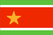

{kind=link}


![[Country map of Guadeloupe]](../maps/gp-map.jpg)
| Guadeloupe |
 |
|
|
|
|
| Introduction |
Background: Guadeloupe has been a French possession since 1635. The island of Saint-Martin is divided with the Netherlands (whose southern portion is named Sint Maarten and is part of the Netherlands Antilles).
| Geography |
Location: Caribbean, islands in the eastern Caribbean Sea, southeast of Puerto Rico
Geographic coordinates: 16 15 N, 61 35 W
Map references: Central America and the Caribbean
Area:
total:
1,780 sq km
land:
1,706 sq km
water:
74 sq km
note:
Guadeloupe is an archipelago of nine inhabited islands, including Basse-Terre, Grande-Terre, Marie-Galante, La Desirade, Iles des Saintes (2), Saint-Barthelemy, Iles de la Petite Terre, and Saint-Martin (French part of the island of Saint Martin
Area - comparative: 10 times the size of Washington, DC
Land boundaries:
total:
10.2 km
border countries:
Netherlands Antilles (Sint Maarten) 10.2 km
Coastline: 306 km
Maritime claims:
exclusive economic zone:
200 nm
territorial sea:
12 nm
Climate: subtropical tempered by trade winds; moderately high humidity
Terrain: Basse-Terre is volcanic in origin with interior mountains; Grande-Terre is low limestone formation; most of the seven other islands are volcanic in origin
Elevation extremes:
lowest point:
Caribbean Sea 0 m
highest point:
Soufriere 1,467 m
Natural resources: cultivable land, beaches and climate that foster tourism
Land use:
arable land:
14%
permanent crops:
4%
permanent pastures:
14%
forests and woodland:
39%
other:
29% (1993 est.)
Irrigated land: 30 sq km (1993 est.)
Natural hazards: hurricanes (June to October); Soufriere is an active volcano
Environment - current issues: NA
| People |
Population: 426,493 (July 2000 est.)
Age structure:
0-14 years:
25% (male 54,603; female 52,339)
15-64 years:
66% (male 139,640; female 142,706)
65 years and over:
9% (male 15,647; female 21,558) (2000 est.)
Population growth rate: 1.11% (2000 est.)
Birth rate: 17.25 births/1,000 population (2000 est.)
Death rate: 6.01 deaths/1,000 population (2000 est.)
Net migration rate: -0.15 migrant(s)/1,000 population (2000 est.)
Sex ratio:
at birth:
1.05 male(s)/female
under 15 years:
1.04 male(s)/female
15-64 years:
0.98 male(s)/female
65 years and over:
0.73 male(s)/female
total population:
0.97 male(s)/female (2000 est.)
Infant mortality rate: 9.77 deaths/1,000 live births (2000 est.)
Life expectancy at birth:
total population:
76.99 years
male:
73.82 years
female:
80.3 years (2000 est.)
Total fertility rate: 1.93 children born/woman (2000 est.)
Nationality:
noun:
Guadeloupian(s)
adjective:
Guadeloupe
Ethnic groups: black or mulatto 90%, white 5%, East Indian, Lebanese, Chinese less than 5%
Religions: Roman Catholic 95%, Hindu and pagan African 4%, Protestant 1%
Languages: French (official) 99%, Creole patois
Literacy:
definition:
age 15 and over can read and write
total population:
90%
male:
90%
female:
90% (1982 est.)
| Government |
Country name:
conventional long form:
Department of Guadeloupe
conventional short form:
Guadeloupe
local long form:
Departement de la Guadeloupe
local short form:
Guadeloupe
Data code: GP
Dependency status: overseas department of France
Government type: NA
Capital: Basse-Terre
Administrative divisions: none (overseas department of France)
Independence: none (overseas department of France)
National holiday: National Day, Taking of the Bastille, 14 July (1789)
Constitution: 28 September 1958 (French Constitution)
Legal system: French legal system
Suffrage: 18 years of age; universal
Executive branch:
chief of state:
President Jacques CHIRAC of France (since 17 May 1995), represented by Prefect Jean FEDINI (since NA 1996)
head of government:
President of the General Council Marcellin LUBETH (since NA March 1998); President of the Regional Council Lucette MICHAUX-CHEVRY (since 22 March 1992)
cabinet:
NA
elections:
French president elected by popular vote for a seven-year term; prefect appointed by the French president on the advice of the French Ministry of Interior; the presidents of the General and Regional Councils are elected by the members of those councils
election results:
NA
Legislative branch:
unicameral General Council or Conseil General (42 seats; members are elected by popular vote to serve six-year terms) and the unicameral Regional Council or Conseil Regional (41 seats; members are elected by popular vote to serve six-year terms)
elections:
General Council - last held 22 March 1998 (next to be held by NA 2004); Regional Council - last held 15 March 1998 (next to be held NA 2004)
election results:
General Council - percent of vote by party - NA; seats by party - diverse left parties 11, PS 8, RPR 8, PPDG 6, diverse right parties 5, PCG 3, UDF 1; Regional Council - percent of vote by party - RPR 48.03%, PS/PPDG/diverse left parties 24.49%, PCG 5.29%, diverse right parties 5.73%; seats by party - RPR 25, PS/PPDG/diverse left parties 12, PCG 2, diverse right parties 2
note:
Guadeloupe elects two representatives to the French Senate; elections last held NA September 1995 (next to be held NA September 2004); percent of vote by party - NA; seats by party - RPR 1, FGPS 1; Guadeloupe elects four representatives to the French National Assembly; elections last held 25 May - 1 June 1997 (next to be held NA 2002); percent of vote by party - NA; seats by party - FGPS 2, RPR 1, PPDG 1
Judicial branch: Court of Appeal or Cour d'Appel with jurisdiction over Guadeloupe, French Guiana, and Martinique
Political parties and leaders: Christian Movement for the Liberation of Guadeloupe or KLPG; Communist Party of Guadeloupe or PCG [Christian CELESTE]; diverse left parties [Jacques GILLOT]; diverse right parties [Simon IBO]; FGPS Dissidents or FRUI.G [Dominique LARIFLA]; Movement for an Independent Guadeloupe or MPGI [Luc REINETTE]; Popular Union for the Liberation of Guadeloupe or UPLG [Lucien PERRUTIN]; Progressive Democratic Party or PPDG [Henri BANGOU]; Rally for the Republic or RPR [Aldo BLAISE]; Socialist Party or PS [Abdon SAMAN]; Union for French Democracy or UDF [Marcel ESDRAS]
Political pressure groups and leaders: Christian Movement for the Liberation of Guadeloupe or KLPG; General Federation of Guadeloupe Workers or CGT-G; General Union of Guadeloupe Workers or UGTG; Movement for Independent Guadeloupe or MPGI
International organization participation: FZ, WCL, WFTU
Diplomatic representation in the US: none (overseas department of France)
Diplomatic representation from the US: none (overseas department of France)
Flag description: three horizontal bands, a narrow green band (top), a wide red band, and a narrow green band; the green bands are separated from the red band by two narrow white stripes; a gold five-pointed star is centered in the red band toward the hoist side; the flag of France is used for official occasions
| Economy |
Economy - overview: The economy depends on agriculture, tourism, light industry, and services. It also depends on France for large subsidies and imports. Tourism is a key industry, with most tourists from the US; an increasingly large number of cruise ships visit the islands. The traditional sugarcane crop is slowly being replaced by other crops, such as bananas (which now supply about 50% of export earnings), eggplant, and flowers. Other vegetables and root crops are cultivated for local consumption, although Guadeloupe is still dependent on imported food, mainly from France. Light industry features sugar and rum production. Most manufactured goods and fuel are imported. Unemployment is especially high among the young. Hurricanes periodically devastate the economy.
GDP: purchasing power parity - $3.7 billion (1996 est.)
GDP - real growth rate: NA%
GDP - per capita: purchasing power parity - $9,000 (1996 est.)
GDP - composition by sector:
agriculture:
6%
industry:
9%
services:
85% (1993 est.)
Population below poverty line: NA%
Household income or consumption by percentage share:
lowest 10%:
NA%
highest 10%:
NA%
Inflation rate (consumer prices): NA
Labor force: 125,900 (1997)
Labor force - by occupation: agriculture 15%, industry 17%, services 68% (1997)
Unemployment rate: 27.8% (1998)
Budget:
revenues:
$225 million
expenditures:
$390 million, including capital expenditures of $105 million (1996)
Industries: construction, cement, rum, sugar, tourism
Industrial production growth rate: NA%
Electricity - production: 1.22 billion kWh (1998)
Electricity - production by source:
fossil fuel:
100%
hydro:
0%
nuclear:
0%
other:
0% (1998)
Electricity - consumption: 1.135 billion kWh (1998)
Electricity - exports: 0 kWh (1998)
Electricity - imports: 0 kWh (1998)
Agriculture - products: bananas, sugarcane, tropical fruits and vegetables; cattle, pigs, goats
Exports: $140 million (f.o.b., 1997)
Exports - commodities: bananas, sugar, rum
Exports - partners: France 60%, Martinique 18%, US 4% (1997)
Imports: $1.7 billion (c.i.f., 1997)
Imports - commodities: foodstuffs, fuels, vehicles, clothing and other consumer goods, construction materials
Imports - partners: France 63%, Germany 4%, US 3%, Japan 2%, Netherlands Antilles 2% (1997)
Debt - external: $NA
Economic aid - recipient: $NA; note - substantial annual French subsidies
Currency: 1 French franc (F) = 100 centimes
Exchange rates: euros per US$1 - 0.9867 (January 2000), 0.9386 (1999); French francs (F) per US$1 - 5.65 (January 1999), 5.8995 (1998), 5.8367 (1997), 5.1155(1996), 4.9915 (1995)
Fiscal year: calendar year
| Communications |
Telephones - main lines in use: 159,000 (1995)
Telephones - mobile cellular: 814 (1990)
Telephone system:
domestic facilities inadequate
domestic:
NA
international:
satellite earth station - 1 Intelsat (Atlantic Ocean); microwave radio relay to Antigua and Barbuda, Dominica, and Martinique
Radio broadcast stations: AM 1, FM 17, shortwave 0 (1998)
Radios: 113,000 (1997)
Television broadcast stations: 5 (plus several low-power repeaters) (1997)
Televisions: 118,000 (1997)
Internet Service Providers (ISPs): NA
| Transportation |
Railways:
total:
NA km; privately-owned, narrow-gauge plantation lines
Highways:
total:
2,082 km
paved:
1,742 km
unpaved:
340 km (1985 est.)
note:
in 1996 there were a total of 3,200 km of roads
Ports and harbors: Basse-Terre, Gustavia (on Saint Barthelemy), Marigot, Pointe-a-Pitre
Merchant marine:
total:
1 ship (1,000 GRT or over) totaling 1,240 GRT/109 DWT
ships by type:
passenger 1 (1999 est.)
Airports: 9 (1999 est.)
Airports - with paved runways:
total:
8
over 3,047 m:
1
914 to 1,523 m:
2
under 914 m:
5 (1999 est.)
Airports - with unpaved runways:
total:
1
under 914 m:
1 (1999 est.)
| Military |
Military branches: French Forces, Gendarmerie
Military - note: defense is the responsibility of France
| Transnational Issues |
Disputes - international: none